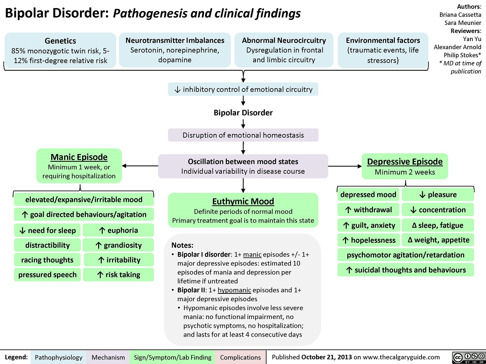
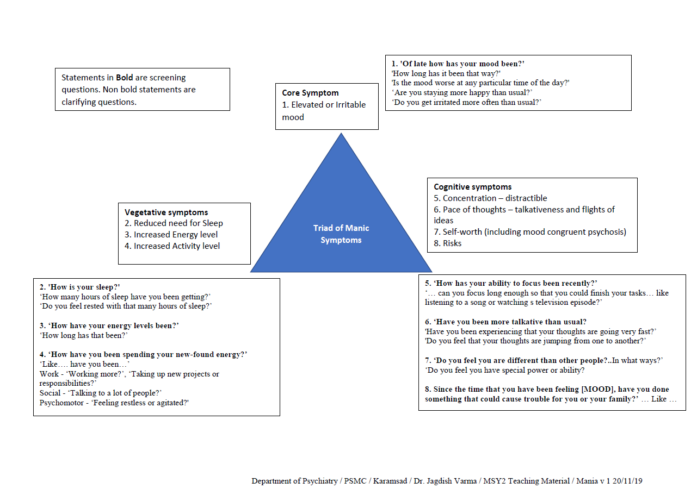

Chapter 6: The patient who is manic
Pathogenesis
Bipolar disorder in primary care
Screening, assessment and diagnosis
Differential diagnosis
What is expected of a primary care clinician
When to refer to a specialist
Treatment
Self directed learning material
Mania usually occurs in association with episodes of depression (bipolar disorder). Bipolar disorder is often undiagnosed or misdiagnosed, and treatment delayed or inappropriate. Primary care providers are in a unique position to screen, diagnose and treat bipolar disorder because people with the disorder often use primary care services. Clinicians need to be able to diagnose and treat bipolar disorder and common medical co-morbidities, as well as provide regular follow-up and support.
Pathogenesis

Bipolar disorder in primary care
Approximately 25 to 50 per cent of all individuals with depression in primary care settings have a bipolar spectrum disorder, one of the subtypes of bipolar disorder. Most individuals with bipolar spectrum disorders presenting to both primary and speciality health care settings are mistakenly diagnosed as having a unipolar disorder. This means that they do not receive guideline-concordant care and, worse, receive inappropriate and possibly hazardous forms of treatment, such as antidepressant monotherapy. Anxiety disorders and substance use disorders are common co-occurring syndromes. The most common co-morbid medical condition in bipolar disorder is overweight/obesity that often co-presents with other features of the metabolic syndrome. Co-morbidity is associated with a greater illness severity, decreased response to treatment and, in the case of cardiovascular disease, premature mortality.
Screening, assessment and diagnosis
Patients with the following factors may be screened for bipolar disorder:
- All patients with mood symptoms
- Patients with co-occurring anxiety disorders, substance use disorder or impulse dyscontrol (e.g., a gambling disorder) should be closely scrutinized for bipolar disorder.
Two question screen for manic symptoms:
- In the past week, have you felt very cheerful or unusually irritable or over-talkative?
- Have you felt unusually high level of energy and decreased need for sleep?
Answering "yes" to either question indicates the need for a more detailed assessment.
Summary of DSM-5 Manic episode criteria - How to ask for symptoms if screens on above questions

Asking about Depressive symptoms is detailed in the chapter on the patient with depressed mood
Some clinical pointers for bipolar depressive episode
- initial presentation of depression that progressed into treatment-resistant depression
- antidepressant monotherapy exacerbating or unmasking hypomania
- prominence of anxiety, agitation and hyperactivity
- poor impulse control
- family history of bipolar disorder
- early age onset of disturbance
Differential diagnosis
; 
- Organic conditions - Many medical illnesses can cause manic symptoms, but they generally have other symptoms and signs associated with the primary disease. Unless indicated by history and/or physical examination, screening blood tests need only include complete blood count and thyroid stimulating hormone test. Primary care providers should consider and seek consent for toxicology screening if they suspect surreptitious illicit drug use. Further laboratory and radiological testing may be indicated based on review of medical history and physical examination findings.
- Manic episode - Core symptom (Abnormally elevated or irritable mood) + 3 symptoms or 4 symptoms if mood is irritable + all three Ds
- D - Duration - 1 week
- D - Distress - Impaired function or needing hospitalization
- D - Differentials
- Drug abuse
- Medications
- Other medical conditions
- Other psychiatric illness
- Hypomanic episode - Core symptom (Abnormally elevated or irritable mood) + 3 symptoms or 4 symptoms if mood is irritable + all three Ds
- D - Duration - 4 days
- D - Distress - No impairment of function and no need for hospitalization
- D - Differentials
- Drug abuse
- Medications
- Other medical conditions
- Other psychiatric illness
- Subtypes of manic / hypomanic episodes
- With anxious distress - co-morbid anxiety symptom
- With mixed features - co-morbid depressive symptoms
- With rapid cycling - >= 4 mood episodes in a year; >= 2 mo period of partial or full remission between episodes
- With psychotic features
- With catatonia
- Subtypes for depressive episodes as described in depressed mood chapter
- Based on the longitudinal h/o of episodes pt can be classified as Bipolar I or Bipolar II disorder
- Bipolar I patients have at least one manic episode.
- Bipolar II - ≥1 hypomanic episode and ≥1 depressive episode
- Cyclothymic disorder - 2-yr w/ periods of depression and elevated mood, without ever meeting criteria for a depressive episode or manic episode
- Psychotic disorders - It can be tough to distinguish a manic episode from the acute psychosis of a patient experiencing a psychotic episode. The combination of a heightened mood, rapid speech, and hyperactivity weighs toward mania. Mania often begins rapidly and is a marked change from previous behaviour. Pts with schizoaffective disorder have Mood symptoms present majority of time during the illness. However, there is also a 2-wk period of psychotic symptoms without mood symptoms is also required.
- Personality disorders - esp. Borderline personality disorder. The defining features of borderline personality disorder are an enduring and pervasive pattern of interpersonal relations that is chaotic and tempestuous, with complaints of emptiness and "attachment difficulties."
What is expected of a primary care clinician
Primary care providers can screen for and establish a diagnosis of bipolar disorder.
- Screening for secondary causes of mania is important. Ruling out substance use disorder can be efficiently conducted through history and, if necessary, toxicology screening.
- Providing psychoeducation and psychosocial or behavioural strategies is warranted in primary care.
- It is reasonable for a primary care physician to be aware of anti-manic pharmacotherapy.
When to refer to a specialist
The primary care provider should refer to a specialist in the following situations:
- a patient requiring hospital admission
- questions regarding capacity for treatment decisions
- unfamiliarity with the use of anti-bipolar medications
- complex and uncertain clinical presentations
- diagnostic dilemmas
- cases of treatment-resistant mania
- problematic adverse events and safety concerns with medication
- when considering electroconvulsive therapy
Treatment
The treatment algorithm for acute mania was developed for psychiatrists treating bipolar mania. Its latter steps are beyond the clinical practice of most primary care physicians.

The first task is to determine the best treatment setting for the patient. Safety concerns related to self-harm or harm to others, as well as neglect of personal care often provide the basis for immediate hospitalization.
Discontinuing antidepressants, caffeine, alcohol and illicit substances are useful first steps.
Many individuals experiencing mania are very distressed by their behaviour and by psychopathological symptoms, such as psychosis. Provide empathic reassurance and attempt to engage the patient in supportive ways. Offer education around the cause of the disturbance and discuss treatment options.
Behavioural strategies for managing mania include establishing normal daily rhythms, with special emphasis on sleep hygiene and appropriate nutritional intake and hydration and energy expenditure.
The pharmacological treatment of an acute manic episode includes lithium, divalproex sodium and atypical antipsychotics alone or in combination (see below).
First line
Lithium, divalproex, olanzapine, risperidone, quetiapine, aripiprazole,
lithium or divalproex + risperidone,
lithium or divalproex + quetiapine,
lithium or divalproex + olanzapine,
lithium or divalproex + aripiprazole
Second line
Carbamazepine, ECT, lithium + divalproex
Third line
Haloperidol, chlorpromazine,
lithium or divalproex + haloperidol,
lithium + carbamazepine,
clozapine,
oxcarbazepine, tamoxifen
For patients presenting with "classic mania," which refers to the presence of euphoria, grandiosity and hyperactivity in a person with a stable episodic course, many experts prefer lithium as a first-line agent.
However, most patients presenting in clinical practice have more complex presentations that include:
- dysphoric/mixed states (simultaneous presence of mania and depression)
- co-morbidity
- psychotic features and rapid cycling (i.e., four or more affective episodes during the prior 12 months)
In such complex presentations lithium may be less efficacious and divalproex and atypical antipsychotics are preferred.
Benzodiazepines are often prescribed to individuals with bipolar disorder. They are very effective at reducing agitation, irritability and anxiety and normalizing sleep efficiency.
Initiating pharmacotherapy and ongoing management
It is generally recommended that if a patient is insufficiently responsive to anti-manic monotherapy after one to two weeks, an adjunctive treatment should be considered.
If a patient stabilizes on combination therapy (e.g., divalproex and an atypical antipsychotic) and tolerates the treatment, the combination regimen should be continued for one to two years.
Managing depression in bipolar disorder
Antidepressant monotherapy is generally discouraged out of concern for destabilizing bipolar disorder. First-line pharmacological treatments for bipolar depression are lithium, lamotrigine or an atypical antipsychotic such as quetiapine. In severe depression, an antidepressant in addition to the first-line agents (lithium, lamotrigine or an atypical antipsychotic) is suggested.
For patients who do not respond adequately to pharmacological treatments while depressed or who have severe symptoms (e.g., psychotic symptoms) or functional impairments, electroconvulsive therapy should be considered.
Self directed learning material
1. Psychiatric interview for teaching mania
2. ADMSEP SDL module on bipolar disorder Link
Bibliography
1. Portico network - Psychiatry in Primary Care Toolkit
2. Black Book - University of Calgary
4. Synopsis of Psychiatry 11e.
5. Gulati, Gautam; Cullen, Walter; Kelly, Brendan. Psychiatry Algorithms for Primary Care (p. 32). Wiley. Kindle Edition.
6. thecalgaryguide.com
7. ADMSEP modules
8. University of Nottinhgam teaching videos
9. Mastering Psychiatry 2016e.
Created with the Personal Edition of HelpNDoc: Free HTML Help documentation generator